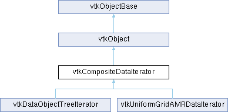

|
Etrek
|
|
Etrek
|
superclass for composite data iterators More...
#include <vtkCompositeDataIterator.h>

Public Member Functions | |
| vtkTypeMacro (vtkCompositeDataIterator, vtkObject) | |
| void | PrintSelf (ostream &os, vtkIndent indent) override |
| virtual void | InitTraversal () |
| virtual void | InitReverseTraversal () |
| virtual void | GoToFirstItem ()=0 |
| virtual void | GoToNextItem ()=0 |
| virtual int | IsDoneWithTraversal ()=0 |
| virtual vtkDataObject * | GetCurrentDataObject ()=0 |
| virtual vtkInformation * | GetCurrentMetaData ()=0 |
| virtual vtkTypeBool | HasCurrentMetaData ()=0 |
| virtual unsigned int | GetCurrentFlatIndex ()=0 |
| virtual void | SetDataSet (vtkCompositeDataSet *ds) |
| vtkGetObjectMacro (DataSet, vtkCompositeDataSet) | |
| vtkSetMacro (SkipEmptyNodes, vtkTypeBool) | |
| vtkGetMacro (SkipEmptyNodes, vtkTypeBool) | |
| vtkBooleanMacro (SkipEmptyNodes, vtkTypeBool) | |
| vtkGetMacro (Reverse, int) | |
| Public Member Functions inherited from vtkObject | |
| vtkBaseTypeMacro (vtkObject, vtkObjectBase) | |
| virtual void | DebugOn () |
| virtual void | DebugOff () |
| bool | GetDebug () |
| void | SetDebug (bool debugFlag) |
| virtual void | Modified () |
| virtual vtkMTimeType | GetMTime () |
| void | PrintSelf (ostream &os, vtkIndent indent) override |
| void | RemoveObserver (unsigned long tag) |
| void | RemoveObservers (unsigned long event) |
| void | RemoveObservers (const char *event) |
| void | RemoveAllObservers () |
| vtkTypeBool | HasObserver (unsigned long event) |
| vtkTypeBool | HasObserver (const char *event) |
| vtkTypeBool | InvokeEvent (unsigned long event) |
| vtkTypeBool | InvokeEvent (const char *event) |
| std::string | GetObjectDescription () const override |
| unsigned long | AddObserver (unsigned long event, vtkCommand *, float priority=0.0f) |
| unsigned long | AddObserver (const char *event, vtkCommand *, float priority=0.0f) |
| vtkCommand * | GetCommand (unsigned long tag) |
| void | RemoveObserver (vtkCommand *) |
| void | RemoveObservers (unsigned long event, vtkCommand *) |
| void | RemoveObservers (const char *event, vtkCommand *) |
| vtkTypeBool | HasObserver (unsigned long event, vtkCommand *) |
| vtkTypeBool | HasObserver (const char *event, vtkCommand *) |
| template<class U, class T> | |
| unsigned long | AddObserver (unsigned long event, U observer, void(T::*callback)(), float priority=0.0f) |
| template<class U, class T> | |
| unsigned long | AddObserver (unsigned long event, U observer, void(T::*callback)(vtkObject *, unsigned long, void *), float priority=0.0f) |
| template<class U, class T> | |
| unsigned long | AddObserver (unsigned long event, U observer, bool(T::*callback)(vtkObject *, unsigned long, void *), float priority=0.0f) |
| vtkTypeBool | InvokeEvent (unsigned long event, void *callData) |
| vtkTypeBool | InvokeEvent (const char *event, void *callData) |
| virtual void | SetObjectName (const std::string &objectName) |
| virtual std::string | GetObjectName () const |
| Public Member Functions inherited from vtkObjectBase | |
| const char * | GetClassName () const |
| virtual vtkTypeBool | IsA (const char *name) |
| virtual vtkIdType | GetNumberOfGenerationsFromBase (const char *name) |
| virtual void | Delete () |
| virtual void | FastDelete () |
| void | InitializeObjectBase () |
| void | Print (ostream &os) |
| void | Register (vtkObjectBase *o) |
| virtual void | UnRegister (vtkObjectBase *o) |
| int | GetReferenceCount () |
| void | SetReferenceCount (int) |
| bool | GetIsInMemkind () const |
| virtual void | PrintHeader (ostream &os, vtkIndent indent) |
| virtual void | PrintTrailer (ostream &os, vtkIndent indent) |
| virtual bool | UsesGarbageCollector () const |
Protected Member Functions | |
| vtkSetMacro (Reverse, int) | |
| Protected Member Functions inherited from vtkObject | |
| void | RegisterInternal (vtkObjectBase *, vtkTypeBool check) override |
| void | UnRegisterInternal (vtkObjectBase *, vtkTypeBool check) override |
| void | InternalGrabFocus (vtkCommand *mouseEvents, vtkCommand *keypressEvents=nullptr) |
| void | InternalReleaseFocus () |
| Protected Member Functions inherited from vtkObjectBase | |
| virtual void | ReportReferences (vtkGarbageCollector *) |
| vtkObjectBase (const vtkObjectBase &) | |
| void | operator= (const vtkObjectBase &) |
Protected Attributes | |
| vtkTypeBool | SkipEmptyNodes |
| int | Reverse |
| vtkCompositeDataSet * | DataSet |
| Protected Attributes inherited from vtkObject | |
| bool | Debug |
| vtkTimeStamp | MTime |
| vtkSubjectHelper * | SubjectHelper |
| std::string | ObjectName |
| Protected Attributes inherited from vtkObjectBase | |
| std::atomic< int32_t > | ReferenceCount |
| vtkWeakPointerBase ** | WeakPointers |
Additional Inherited Members | |
| Static Public Member Functions inherited from vtkObject | |
| static vtkObject * | New () |
| static void | BreakOnError () |
| static void | SetGlobalWarningDisplay (vtkTypeBool val) |
| static void | GlobalWarningDisplayOn () |
| static void | GlobalWarningDisplayOff () |
| static vtkTypeBool | GetGlobalWarningDisplay () |
| Static Public Member Functions inherited from vtkObjectBase | |
| static vtkTypeBool | IsTypeOf (const char *name) |
| static vtkIdType | GetNumberOfGenerationsFromBaseType (const char *name) |
| static vtkObjectBase * | New () |
| static void | SetMemkindDirectory (const char *directoryname) |
| static bool | GetUsingMemkind () |
| Static Protected Member Functions inherited from vtkObjectBase | |
| static vtkMallocingFunction | GetCurrentMallocFunction () |
| static vtkReallocingFunction | GetCurrentReallocFunction () |
| static vtkFreeingFunction | GetCurrentFreeFunction () |
| static vtkFreeingFunction | GetAlternateFreeFunction () |
superclass for composite data iterators
vtkCompositeDataIterator provides an interface for accessing datasets in a collection (vtkCompositeDataIterator).
|
pure virtual |
Returns the current item. Valid only when IsDoneWithTraversal() returns 0.
Implemented in vtkDataObjectTreeIterator, and vtkUniformGridAMRDataIterator.
|
pure virtual |
Flat index is an index to identify the data in a composite data structure
Implemented in vtkDataObjectTreeIterator, and vtkUniformGridAMRDataIterator.
|
pure virtual |
Returns the meta-data associated with the current item. This will allocate a new vtkInformation object is none is already present. Use HasCurrentMetaData to avoid unnecessary creation of vtkInformation objects.
Implemented in vtkDataObjectTreeIterator, and vtkUniformGridAMRDataIterator.
|
pure virtual |
Move the iterator to the beginning of the collection.
Implemented in vtkDataObjectTreeIterator, and vtkUniformGridAMRDataIterator.
|
pure virtual |
Move the iterator to the next item in the collection.
Implemented in vtkDataObjectTreeIterator, and vtkUniformGridAMRDataIterator.
|
pure virtual |
Returns if the a meta-data information object is present for the current item. Return 1 on success, 0 otherwise.
Implemented in vtkDataObjectTreeIterator, and vtkUniformGridAMRDataIterator.
|
virtual |
Begin iterating over the composite dataset structure in reverse order.
|
virtual |
Begin iterating over the composite dataset structure.
|
pure virtual |
Test whether the iterator is finished with the traversal. Returns 1 for yes, and 0 for no. It is safe to call any of the GetCurrent...() methods only when IsDoneWithTraversal() returns 0.
Implemented in vtkDataObjectTreeIterator, and vtkUniformGridAMRDataIterator.
|
overridevirtual |
Methods invoked by print to print information about the object including superclasses. Typically not called by the user (use Print() instead) but used in the hierarchical print process to combine the output of several classes.
Reimplemented from vtkObjectBase.
Reimplemented in vtkDataObjectTreeIterator, and vtkUniformGridAMRDataIterator.
|
virtual |
Set the composite dataset this iterator is iterating over. Must be set before traversal begins.
| vtkCompositeDataIterator::vtkGetMacro | ( | Reverse | , |
| int | ) |
Returns if the iteration is in reverse order.
| vtkCompositeDataIterator::vtkSetMacro | ( | SkipEmptyNodes | , |
| vtkTypeBool | ) |
If SkipEmptyNodes is true, then nullptr datasets will be skipped. Default is true.